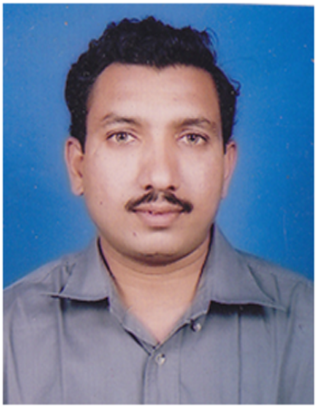

To nurture, through curriculum, value based education, imbibing technical, and research and entrepreneurship skills for crafting multi-visionary civil engineers.
To create multi visionary engineers through excellence in education by continual restructuring of curriculum through industry- institute interaction by developing infrastructure and laboratories of global standards.
To provide healthy and dynamic environment that enables to generate quality teaching learning, explore research and consultancy domain.
-
To develop and imbibe qualities of competent professional with wide knowledge base and practical aptitude.
-
To develop professional skills for various project phases such as design, construction, construction management, quality control and assurance and associated environmental impact
-
To inculcate the team spirit for analyzing and resolving real life challenges and social issues by using and developing appropriate techniques.
-
Creating inspiring environment for various competitive examinations, advance studies, research and development.
-
Engineering knowledge: Apply the knowledge of mathematics, science, engineering fundamentals, and an engineering specialization to the solution of complex engineering problems.
-
Problem analysis: Identify, formulate, review research literature, and analyze complex engineering problems reaching substantiated conclusions using first principles of mathematics,natural sciences, and engineering sciences.
-
Design/development of solutions: Design solutions for complex engineering problems and design system components or processes that meet the specified needs with appropriate consideration for the public health and safety, and the cultural, societal, and environmental considerations.
-
Conduct investigations of complex problems: Use research-based knowledge and research methods including design of experiments, analysis and interpretation of data, and synthesis of the information to provide valid conclusions.
-
Modern tool usage: Create, select, and apply appropriate techniques, resources, and modern engineering and IT tools including prediction and modeling to complex engineering activities with an understanding of the limitations.
-
The engineer and society: Apply reasoning informed by the contextual knowledge to assess societal, health, safety, legal and cultural issues and the consequent responsibilities relevant to the professional engineering practice.
-
Environment and sustainability: Understand the impact of the professional engineering solutions in societal and environmental contexts, and demonstrate the knowledge of, and need for sustainable development.
-
Ethics: Apply ethical principles and commit to professional ethics and responsibilities and norms of the engineering practice.
-
Individual and team work: Function effectively as an individual, and as a member or leader in diverse teams, and in multidisciplinary settings.
-
Communication: Communicate effectively on complex engineering activities with the engineering community and with society at large, such as, being able to comprehend and write effective reports and design documentation, make effective presentations, and give and receive clear instructions.
-
Project management and finance: Demonstrate knowledge and understanding of the engineering and management principles and apply these to one’s own work, as a member and leader in a team, to manage projects and in multidisciplinary environments.
-
Life-long learning: Recognize the need for, and have the preparation and ability to engage inindependent and life-long learning in the broadest context of technological change.
-
Developing multifaceted knowledge base for systematic solution of engineering and environmental challenges.
-
To develop integrated approach through field experiments, analysis and design using modern techniques for sustainable solutions.
-
To develop socio-engineering personality with cultural values and ethics
-
To enrich the managerial skills, leadership,team spirit for continual learning.

Dear Students,
I take the privilege to welcome you all to the department of Civil Engineering. The aim of the department is to impart the students a sound knowledge of the theory of Civil Engineering subjects with exposure to practical knowledge through laboratories and field study. The civil Engineering department has well qualified, dynamic and professionally committed staff to cope up with the university curriculum. The department has following laboratories which facilitates the students to understand the curriculum as prescribed by the university as well as other latest equipments and softwares.
Material Testing laboratory,
Geotechnical Engineering Laboratory,
Engineering Geology Laboratory,
Transportation Engineering Laboratory,
Surveying,
Engineering Mechanics,
Structural Dynamics and Earthquake Engineering,
Environmental Engineering,
Fluid Mechanics and Hydraulic Machines,
Computer Laboratory,
Center of Excellence in “Structural Audit & NDT”
The department of Civil Engineering at MIT has an excellent infrastructure and state of art Labs. The department owns special equipments like Universal Testing Machine, Compression Testing Machine, Tri-axial Testing Machine, Ductility Tests, Rebound Hammer, NDT equipment etc. Faculty members are member of ISTE, IGS, ISSE, IEI, and other reputed organization chapters.
Infrastructure in India is going to be developed at large scale and high pace in the next coming years. Hence I am sure that the civil Engineers of MIT will make the nation proud.
Best wishes,
Dr. M.S.Dixit
Head of Department